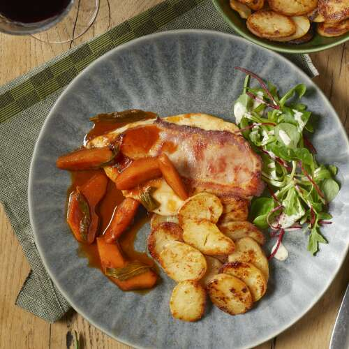

Kippenescalope met zwartewoudham en appelpartjes met salie
Ingredienten
- 200 g Kippenscalopes
- 1,5 sneetjes zwartewoudham
- 35 g salamix Trio (rucola, veldsla, rode biet)
- 1 appel
- enkele blaadjes salie
- 125 g voorgekookte aardappelschijfjes
- peper en zout
- 0,25 dl witte wijn
- 0,5 eetl. boter
- 0,25 eetl. Bloem
- 0,25 eetl. mayonaise
- O,25 eetl. mosterd op traditionele wijze
- 0,5 eetl. boter
- 0,25 koffiel. Tomatenpuree
- 0,5 eetl. olijfolie
- 0,25 eetl. wittewijnazijn
Bereiding
- eetl. boter en 1 eetl. olijfolie in een pan en bak de aardappelschijfjes goudbruin (baktijd: zie verpakking).
- Verhit intussen opnieuw 1 eetl. boter en 1 eetl. olijfolie in een grote pan en bak de escalopes 1 min. op de kant met de ham. Draai om en bak nog 1 min.
- Voeg de stukken appel toe en laat nog 1 min. bakken. Doe er de tomatenpuree bij en blus met de witte wijn. Voeg de salie toe en laat nog 1 min. koken op een zacht vuur.